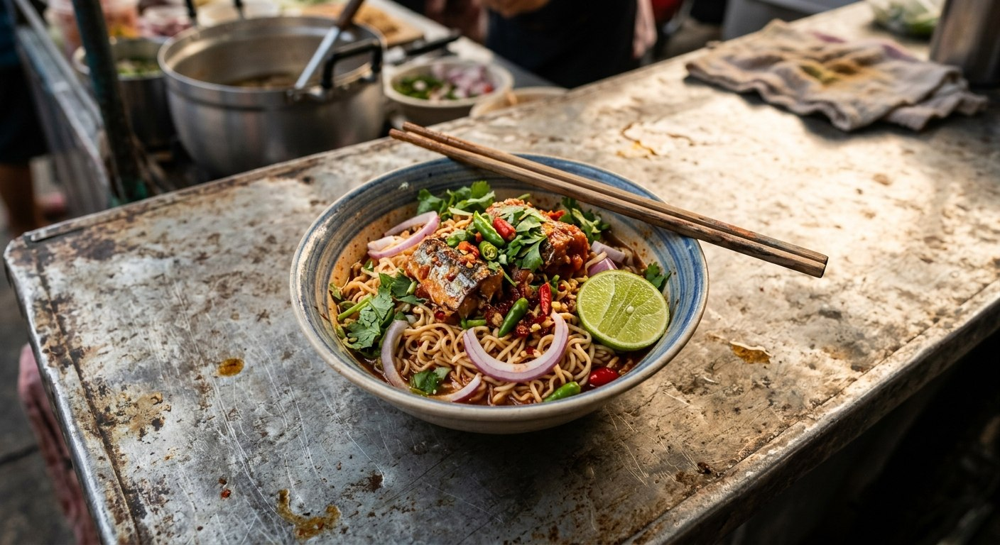

Instant noodles tossed in lime and chilli with canned fish on top — the dorm-room salad that Thailand never outgrew.

ยำมาม่า is Thailand's great equaliser — a dish built from the cheapest shelf in the shop, turned sharp with lime and chilli. The base is instant noodles, almost always the tom yum flavour, boiled, drained, and treated like a yam: dressed, tossed, topped. Kapook frames the dish's economics honestly — one pack of noodles, one can of fish, and it feeds you fierce.
Kapook's recipe carries the dish's two hard rules in the form of warnings. First: boil the noodles 2–3 minutes only — over-boiled instant noodles go soggy and the salad dies. Second: never tip the whole can of fish, oil and all, onto the noodles — lift the fish out and leave the greasy liquid behind, or the salad turns heavy. Then the onion rings, coriander, sliced bird's eye chillies and a lime wedge over the top, and it's done.
From there the dish scales as far as the budget allows. TrueID's loaded version is the same structure with real firepower: moo yor, prawns and dry-fried minced pork, dressed with the instant-noodle seasoning sachet, fish sauce, sugar and — the pro move — three tablespoons of pickled garlic brine as the acid. Krua.co's version goes the other way into the can: the tomato sauce from the canned fish goes into the dressing instead of down the sink. Same dish, three spending levels.
| Thai | English | Amount |
|---|---|---|
| มาม่ารสต้มยำกุ้ง | Mama tom yum noodles | 2 packs |
| ปลากระป๋อง | Canned fish | 1 can |
| หอมใหญ่หั่นวง | Onion, rings | to taste |
| มะนาว | Lime | 1 wedge |
| พริกขี้หนูซอย | Bird's eye chillies, sliced | 3 |
| ผักชี | Coriander | a little |
The loaded version (TrueID): 1 big pack, 1 cup moo yor, 10 prawns, 1 cup minced pork, ½ cup each of chilli, onion, shallots and celery, 2 tbsp fish sauce, 3 tbsp pickled garlic brine, 1 tbsp sugar, 2½ tbsp lime, 1 tsp of the sachet. Krua.co's twist: the tomato sauce from the canned fish goes into the dressing.
The can liquid: keep or ditch. Kapook lifts the fish out and leaves the oil behind — grease is the enemy. Cookpad pours a little of the can liquid over for extra flavour. Krua.co goes furthest: the tomato sauce from the can goes straight into the dressing. Three answers to the same can.
The sachet. Cookpad stirs the whole seasoning sachet into the cooled noodles; TrueID uses a teaspoon in the dressing; Kapook skips it entirely — the fresh lime, chilli and fish do the work. The sachet version is punchier and saltier.
Protein budget. Canned fish alone (Kapook, Cookpad) or moo yor, prawns and minced pork (TrueID's loaded bowl). The dish is one structure at any price point.
The acid. Fresh lime (all three) or TrueID's pickled garlic brine as the deep, savoury-sour pro version. The brine is the street-stall secret — it rounds the lime rather than replacing it.
Hot or cold noodles. Cookpad cools the noodles before dressing — a yam should not be hot. Kapook dresses warm. The cooled version keeps the herbs crisp; the warm version drinks the dressing faster.
This recipe is translated from the following Thai-language sources. Where they disagree, we've said so.
1. Kapook — "มาม่ายำปลากระป๋อง เมนูประหยัดสุดแซ่บแน่นเครื่อง" (the recipe used here) — cooking.kapook.com
2. TrueID — "สูตรเด็ด ยำมาม่า พร้อมเทคนิคทำเส้นไม่อืด" (the loaded version, pickled-garlic-brine dressing) — food.trueid.net
3. Cookpad — "ยำมาม่าใส่ปลากระป๋อง" by Cookie Airean (cooled-noodle school) — cookpad.com
4. Krua.co — "ยำมาม่าปลากระป๋อง" (tomato-sauce-in-the-dressing twist) — krua.co